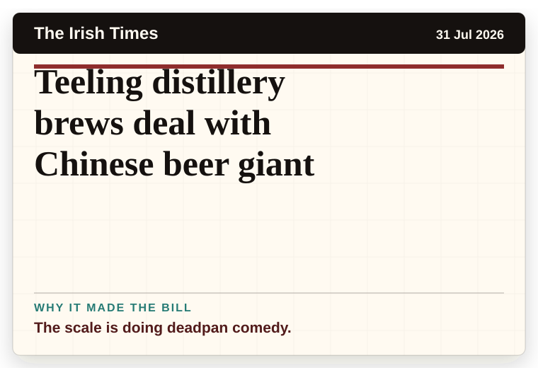
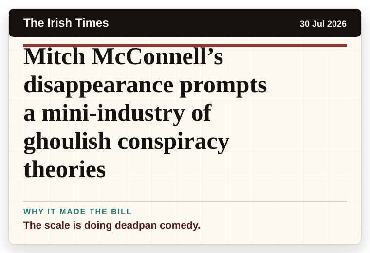
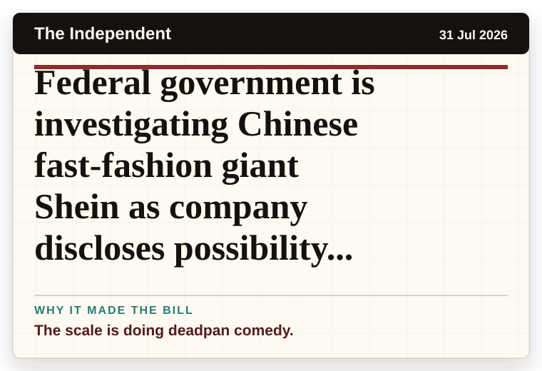

NT News
Australia
Train line closure causes commuter chaos
The word chaos gives it open-mic energy.
The latest daily picks, linked back to the original sources. Search the room, pick a source, or follow a headline out to the full story.
Record updated: 31 Jul 2026, 07:54 AM AEST
Showing 12 headline candidates from the refresh run completed on 31 Jul 2026, 07:54 AM AEST.
The word chaos gives it open-mic energy.

It has the shape of a tiny adventure reported with a straight face.

The scale is doing deadpan comedy.

A wonderfully specific detail has taken centre stage.

A wonderfully specific detail has taken centre stage.

A wonderfully specific detail has taken centre stage.

A mystery is doing a lot of work in a very small sentence.

A mystery is doing a lot of work in a very small sentence.

The scale is doing deadpan comedy.
The scale is doing deadpan comedy.

The scale is doing deadpan comedy.

The scale is doing deadpan comedy.